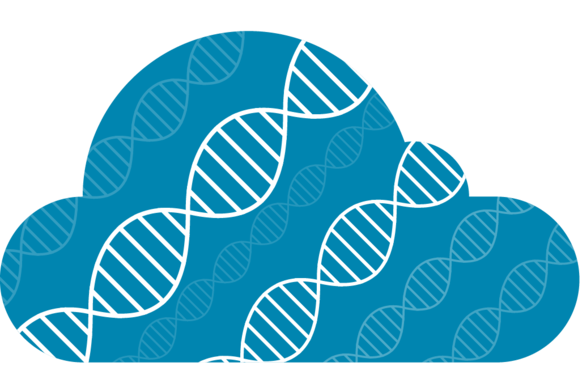

Home
About
About the project
Our aims
Contact us
Self-study Courses
Upcoming Courses
Blogs
Blogs
Categories
All
(26)
Announcements
(16)
Behind-the-scenes
(9)
Environmental omics
(3)
External opportunities
(5)
Genomics
(5)
Metagenomics
(2)
Open science
(5)
Prenomics
(4)
R
(1)
Resources
(1)

Additional funding to expand training courses
Announcements
Fantastic news for Cloud-SPAN which has been awarded an additional ~£200,000. Cloud-SPAN is led by Emma Rand and James Chong and trains researchers, and the research…
Emma Rand
2023-11-21
Join the team!
Announcements
We are currently recruiting for a Research Training Lead to join us on a 6 month contract, with the opportunity to work remotely or on campus at the University of York.
Sarah Dowsland
2023-11-21
Prenomics and Genomics
Prenomics
Open science
Genomics
We are excited to announce that registration is now open for Prenomics and Genomics.
Sarah Dowsland
2023-11-15
NEW online workshop - Introduction to R
Announcements
R
Join us for this free online two-hour workshop which provides an introduction to R for complete beginners. By the end of the course you will be able to;
Sarah Dowsland
2023-05-09
Congratulations to James Chong and the team!
Announcements
Environmental omics
Cloud-SPAN PI, Prof James Chong has recently been selected (as one of three globally) Oracle for Research Fellows for their Spring 2023 cohort. This industrially-funded…
Sarah Dowsland
2023-04-26
Cloud-SPAN Code Retreat
Announcements
We are excited to announce that our next Code Retreat will take place at 10:30-15:00 on 31st May 2023 at the University of York. It provides a chance for course alumni to…
Sarah Dowsland
2023-04-19
NorthernBUG Meeting
Announcements
External opportunities
We are pleased to announce that registration is open for the 9th NorthernBUG Meeting! It’s a great opportunity to meet people and network so we hope to see you all there!…
Sarah Dowsland
2023-04-19
In depth: course feedback
Prenomics
Genomics
Metagenomics
Behind-the-scenes
We’ve finished our analysis of the feedback from our courses held at the end of last year: Prenomics, Genomics and Metagenomics. We’re pleased to see that on average…
Evelyn Greeves
2023-02-02
üí∏Scholarships to attend the Northern Bioinformatics User Group meeting 13th Jan
Announcements
Open science
We have
scholarships
to cover expenses to attend the Northern Bioinformatics User Group (Northern BUG) meeting to be held on Friday 13th January 2023 at the University of…
Sarah Dowsland
2022-12-16
Cloud-SPAN Code Retreat
Announcements
We are excited to announce that our next Code Retreat will take place on Monday 9th January 2023 at the University of York. It provides a chance for course alumni to come…
Sarah Dowsland
2022-12-16
How do we support our learners?
Behind-the-scenes
Learning new skills can be difficult, and it's easy to go away from a course feeling like you're even more confused than when you started! Here’s what do we do at Cloud-SPAN…
Evelyn Greeves
2022-11-07
Prenomics: Lowering barriers to participation
Behind-the-scenes
Prenomics
Genomics
For most of our new learners, the idea of doing things like using the command line and accessing the cloud is completely new and a bit overwhelming. But these are skills…
Evelyn Greeves
2022-10-18
Scholarships, funding and so much more!
Behind-the-scenes
Announcements
Here at Cloud-SPAN HQ our official tagline is that we are here to upskill researchers and enable them to perform complex analyses on cloud-based platforms. Which we are…
Sarah Dowsland
2022-10-11
üì¢ Online workshop on FAIR data hosted by the UK Reproducibility Network
Announcements
External opportunities
Open science
Just to let you know regarding an event happening on
Wednesday 19th October
which might be of interest: the UK Reproducibility Network are running an online workshop on FAIR…
Sarah Dowsland
2022-10-11
Cloud-SPAN awarded NERC funding to expand training courses
Announcements
Metagenomics
The Cloud-SPAN team has been awarded a grant to expand our training to the Natural Environment Research Council (NERC) remit under the Advanced training for early-career…
Sarah Dowsland
2022-09-05
Our Solutions to Challenges in Environmental ’Omics
Environmental omics
Behind-the-scenes
Here’s what we’re doing at Cloud-SPAN to address the challenges we discussed previously.
Evelyn Greeves
2022-08-31
üí∏Scholarships to attend the Northern Bioinformatics User Group meeting 9th September
Announcements
External opportunities
We have
scholarships
to cover expenses to attend the Northern Bioinformatics User Group (Northern BUG) meeting to be held on September 9th 2022 at the University of Bradford.
Emma Rand
2022-07-18
Challenges in Environmental ’Omics
Environmental omics
The size and nature of ‘omics data means it is often necessary to employ high performance computing (HPC) resources for analysis. This presents an inherent challenge as use…
Evelyn Greeves
2022-07-13
Making the Prenomics summary poster
Prenomics
Behind-the-scenes
Resources
I recently designed a poster that acts as a “cheat sheet” for Cloud-SPAN’s Prenomics course. Here I’ll give a quick overview of my thought process while making the poster…
Evelyn Greeves
2022-07-06
FAIR at Cloud-SPAN
Open science
Behind-the-scenes
Previously we shared some information about FAIR data, and explained why it’s important to make sure your data is as reusable as possible.
Evelyn Greeves
2022-06-29
Bioinformatics Meeting on ‘Career pathways into bioinformatics’
Announcements
External opportunities
Join the University of York’s Bioinformatics Meeting on ‘Career pathways into bioinformatics’.
Sarah Dowsland
2022-06-22
Cloud-SPAN April Code Retreat
Announcements
Behind-the-scenes
In April we held our first code retreat event: a chance for course alumni to come together and work on their own data problems with the support of Cloud-SPAN instructors.…
Evelyn Greeves
2022-06-14
More online computational training for life scientists!
Announcements
External opportunities
The Cloud-SPAN team would like to let you know about more opportunities for online training! Ed-DaSH from the University of Edinburgh, is a Data Science training programme…
Emma Rand
2022-06-08
What is FAIR data?
Open science
At Cloud-SPAN we care deeply about making science as open as possible. A lot of this comes down to project management and data organisation - which we teach as part of our…
Evelyn Greeves
2022-05-31
Genomics Self-Study now LIVE! üߨ
Genomics
Announcements
We are pleased to announce that the registration for Genomics self-study is now live!
Evelyn Greeves
2022-05-22
Course Update
Genomics
Behind-the-scenes
Well, it’s been a couple of weeks since we ran our first course and we’ve certainly learned a lot from it! Most of the problems we stumbled into were minor teething issues…
Evelyn Greeves
2021-12-14
No matching items